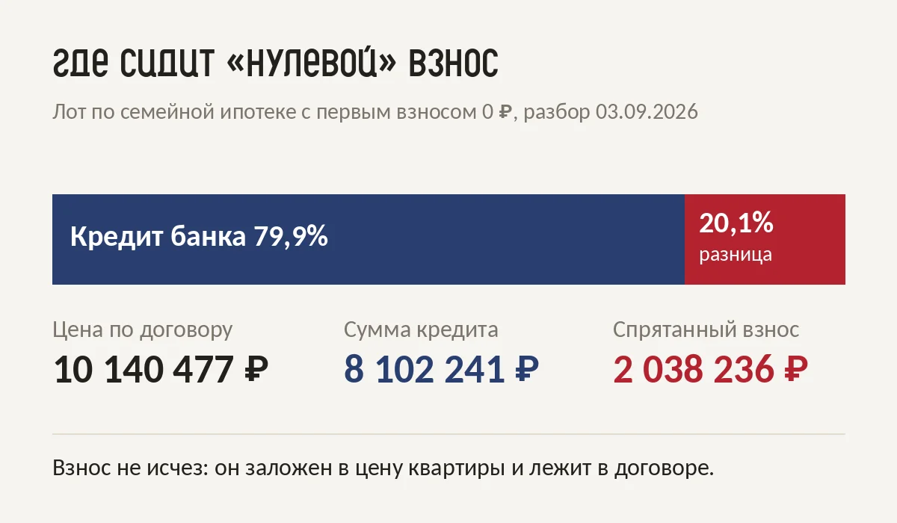
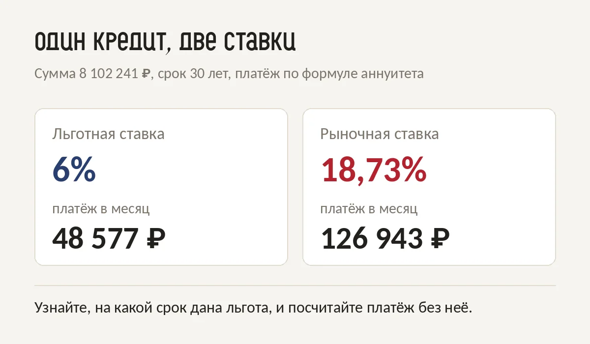

Ипотеку без первоначального взноса в 2026 году найти можно, но кредитов с маленьким взносом ЦБ разрешает банкам выдавать немного. Поэтому «0 ₽ на старте» чаще всего значит, что взнос закрыт чем-то другим: ценой квартиры, маткапиталом, залогом другой квартиры, рассрочкой или вторым кредитом.
Я двадцать лет проработала в банке и шесть лет помогаю купить и продать жильё в Москве и Петербурге. Про покупку без первого взноса меня спрашивают постоянно. После этой статьи у вас будут пять рабочих способов, таблица, что вы платите в каждом, и пять проверок, которые я делаю с клиентами до брони.
Банк просит взнос, потому что это ваша доля риска: чем она меньше, тем опаснее кредит. С 1 июля 2025 года ЦБ применяет лимиты по ипотеке и ограничивает долю рискованных кредитов в выдачах банков. Поэтому кредитов с маленьким взносом стало мало.
Банк России пересматривает лимиты каждый квартал, последнее решение по ним принято 28 октября 2026 года. Для примера, лимиты на III квартал 2026 года были такими:
По семейной ипотеке нижняя планка взноса 20% цены. Актуальные значения лимитов перед заявкой смотрите на сайте Банка России, я сверяю их каждый квартал.
Первым взносом банк считает только три вида денег. Деньги застройщика в этот список не входят. Если застройщик «дарит» вам взнос, для банка это всё равно кредит почти на всю цену, и он упирается в тот же лимит ЦБ.
По решению ЦБ взносом считаются:
Поэтому застройщик решает задачу иначе: закладывает взнос в цену квартиры.
Ниже пять вариантов, которые я разбираю с клиентами. В каждом своя цена: наценка в цене квартиры, бюджетный сертификат, залог второй квартиры, рассрочка или второй кредит.
Самый частый вариант в Москве. В начале сентября я разбирала три таких предложения по семейной ипотеке. Во всех трёх разница между ценой по договору и суммой кредита оказалась ровно 20,1%.

На одном лоте это выглядело так:
Кто и как оплачивает эту разницу, смотрите в договоре и условиях программы. Платёж в рекламе я пересчитала по формуле: по условиям сентября 2026 года, при 6% годовых на 30 лет он 48 577 ₽ в месяц. Ставку и срок льготы всегда уточняйте отдельно.
Маткапитал банк засчитывает взносом, потому что это бюджетные деньги. В 2026 году на первого ребёнка это 728 921,90 ₽, на второго, если на первого не получали, 963 243,17 ₽. Для квартиры за 10 млн ₽ нужен взнос 2 млн ₽, полный сертификат закроет из него 36-48%, остальное добираете сами.
Банк выдаёт кредит на новую квартиру под залог старой. Взнос тогда может не понадобиться, зато банк берёт в залог вашу квартиру, а иногда обе. Состав залога и условия смотрите в договоре. Этот способ подходит тем, кто покупает жильё побольше и в ближайший год продаёт нынешнее.
Такие рассрочки появляются у застройщиков время от времени. Банк при рассрочке заёмщика не проверяет, это её плюс. Минусы в том, что цена в рассрочке обычно выше базовой, а остаток нужно закрыть к сроку, чаще всего той же ипотекой.
Технически это работает, на деле это самый дорогой путь. Банк увидит второй кредит в кредитной истории и посчитает его платёж в вашу нагрузку. Если оба платежа вместе забирают больше половины дохода, по ипотеке легко получить отказ. Если одобрят, вы платите два кредита сразу, один по потребительской ставке.
Коротко: дешевле всего взнос обходится с маткапиталом, дороже всего с потребкредитом. Предложение застройщика в середине, и всё решает, насколько цена «без взноса» выше цены при полной оплате.
| Способ | Что вы на самом деле платите | Кому подходит |
|---|---|---|
| Застройщик «0 ₽» | разница между ценой по программе и ценой при полной оплате | стабильный доход без накоплений |
| Материнский капитал | ничего сверху, взнос из бюджета | семьям с сертификатом |
| Залог своей квартиры | риск сразу по двум квартирам | тем, кто продаёт старое жильё |
| Рассрочка без первого платежа | цена выше базовой, остаток к сроку | покупке на этапе стройки |
| Потребкредит на взнос | второй кредит по высокой ставке | почти никому |
Проверка занимает пять минут и одно сообщение менеджеру. Вам нужны три цифры: цена при 100% оплате, ставка и срок льготы. С ними вы видите настоящую цену «нуля» и платёж, который придёт после льготы.

Платёж по аннуитету считается по формуле: платёж = кредит × r / (1 − (1 + r)^−n), где r это месячная ставка (годовая, делённая на 12 и на 100), n это число месяцев.
Пример для кредита 8 102 241 ₽ на 30 лет:
Если не хочется считать вручную, подставьте цифры в любой ипотечный калькулятор банка, только обязательно введите ставку после льготного периода. Так вы увидите платёж, который будете платить большую часть срока.
Новостройка. Предложения «0 ₽» чаще всего делают застройщики вместе с банком-партнёром. Взнос в таких схемах не исчезает, он заложен в цену квартиры. Сравнивайте цену метра с той же квартирой при обычной ипотеке.
Вторичка. Банки почти не дают ипотеку на вторичку без взноса: залогом становится чужая квартира с историей, и риск банка выше. Рабочие варианты здесь это залог квартиры, которая у вас уже есть, или материнский капитал в счёт взноса.
Семейная ипотека. Минимальный взнос по программе 20%. Закрыть его можно материнским капиталом или региональной выплатой, тогда своих денег на старте не нужно.
Москва и Петербург. С 1 октября 2026 года условия семейной ипотеки зависят от региона и числа детей, поэтому ставка в Москве и Петербурге может отличаться от других регионов. Проверяйте условия на дату сделки. Разница в ценах: 20% взноса за квартиру в Москве легко превращаются в 3-5 млн ₽, поэтому вопрос «без взноса» здесь звучит чаще.
У покупки без взноса есть риск, о котором в рекламе не говорят. В первый день после сделки долг перед банком почти равен цене квартиры, а сама цена при этом включает наценку за «ноль». Если через год-два понадобится продать квартиру, денег от продажи может не хватить, чтобы закрыть ипотеку.
Пример на цифрах из разобранного лота. Цена по договору 10,14 млн ₽, кредит 8,1 млн ₽. Допустим, при полной оплате эта же квартира стоила бы 8,5 млн ₽. Через год вы продаёте её по рыночной цене около 8,5-9 млн ₽, а долг за год при аннуитете уменьшился всего на сотню тысяч рублей, основная часть платежей ушла на проценты. Из продажи вы закроете ипотеку и почти ничего не заработаете. Расходы на сделку и ремонт уйдут в минус.
Поэтому покупку без взноса я советую тем, кто планирует жить в квартире долго, минимум пять-семь лет. Для перепродажи или «переждать пару лет» такой вариант не подходит.
Ещё два риска:
Не всегда стоит искать предложение совсем без взноса. Часто выгоднее найти часть взноса другим способом и взять обычную ипотеку по базовой цене.
| Ситуация | Без взноса | Почему |
|---|---|---|
| Стабильный доход, платёж до половины дохода, живёте в квартире долго | подходит | наценка размазывается на годы жизни в своей квартире |
| Снимаете жильё и аренда сопоставима с платежом | подходит | вместо аренды платите за своё |
| Доход нестабильный, нет подушки | не подходит | любой сбой превращается в просрочку |
| Планируете продать через 1-3 года | не подходит | долг почти равен цене, продажа в минус |
| Есть квартира, которую можно продать | лучше альтернативная сделка | взнос из продажи, цена без наценки |
| Есть 10-15% своих денег | лучше обычная ипотека | больше предложений и базовая цена |
Когда клиент присылает мне карточку «0 ₽», я пишу менеджеру короткое сообщение. Ответы на эти вопросы за пять минут показывают, сколько на самом деле стоит предложение.
Если на первые четыре вопроса менеджер отвечает уклончиво, это уже ответ. Честные предложения считаются открыто, и цифры дают письменно.
Схема простая, и её полезно понимать, чтобы не путаться в цифрах.
На лоте из примера выше кредит 8,1 млн ₽ закрывает 79,9% цены 10,14 млн ₽. Если базовая цена этой квартиры около 8,1-8,5 млн ₽, то за «ноль» вы платите наценкой 1,6-2 млн ₽, которая остаётся в цене квартиры. Отбить её получится только временем: годами жизни в своей квартире вместо аренды и ростом цен.
Возьмите доход семьи и посчитайте платёж, который не превышает половины. Весь дальнейший расчёт идёт от него.
Без взноса банк смотрит на заёмщика строже. Просрочки, микрозаймы, лишние кредитные карты лучше закрыть заранее. Как это сделать: как проверить кредитную историю.
По каждому возьмите письменно цену по программе и цену при 100% оплате.
Разница цен это цена «нуля». Платёж после льготы это то, что вы будете платить годами.
Посчитайте ту же квартиру с 20% взноса, если его можно собрать способами из раздела выше. Иногда разница в цене больше, чем стоит накопить.
Юридическая проверка, сроки сдачи, условия ДДУ и пункт о перерасчёте площади. Как проверить застройщика: как проверить застройщика.
Сначала одобрение банка по конкретной программе, потом бронь и сделка. Подробно про этапы: одобрение ипотеки.
Предложение без взноса хорошо, когда платёж вам комфортен даже без льготы, а квартира стоит своих денег вместе с наценкой. Осенью 2025 года я подбирала такую семье с бюджетом до 12 млн ₽: 47 м² с московской пропиской, без первоначального взноса, под 6% годовых. Ребята сначала почти отказались от идеи. Когда увидели квартиру, загорелись.
Видела я и обратное. Дешёвые предложения без взноса приводят людей без подушки: первый же форс-мажор, и платёж становится неподъёмным. Поэтому до брони я всегда считаю с клиентом три цифры: цену при 100% оплате, платёж после льготы и сколько останется от дохода.
Статья даёт общую картину. Решение зависит от ваших цифр: сколько есть на взнос, какой доход, какой город и район. На консультации я считаю первый взнос, платёж после льготы и переплату за весь срок, показываю подборку онлайн и говорю, что имеет смысл смотреть. По новостройкам мою работу оплачивает застройщик.
Записаться можно через мой бот в Telegram: разобрать покупку без взноса. Бот пришлёт короткое знакомство со мной, дальше разбор в переписке или на онлайн-встрече.
Хотите сначала посчитать сами? Заберите разбор «СТАВКА» с формулой, которая переводит процент в рубли, и 9 вопросами застройщику и банку до подписания: разбор «СТАВКА» в Telegram.
Можно, но таких кредитов мало: в новостройках ЦБ ограничил их долю пятью процентами выдач банка. Чаще «0 ₽» означает, что взнос заложен в цену квартиры или закрыт маткапиталом.
Да. Банк засчитывает взносом бюджетные деньги, маткапитал к ним относится.
Деньги застройщика банк взносом не считает. Поэтому застройщик закладывает сумму взноса в цену, в разобранных мной предложениях это было около 20%.
От 20% цены квартиры. Его можно закрыть маткапиталом или региональной субсидией.
Считайте переплату. Если цена «без взноса» выше на 2 млн ₽, копить эти деньги выгодно, только когда за время накопления квартира не подорожает сильнее.
Почти нет. Банки требуют взнос от 20%, обойти его можно залогом другой своей квартиры или материнским капиталом.
Дают, но с 1 октября 2026 года условия семейной ипотеки зависят от региона и числа детей. В новостройках это в основном предложения застройщиков, где взнос учтён в цене.
Можно, с согласия банка, как любую ипотечную квартиру. Но в первые годы долг почти равен цене, поэтому денег от продажи может хватить только на погашение ипотеки.
Сравнивайте по итоговой цене квартиры и графику платежей. В рассрочке нет проверки банка, но остаток нужно закрыть к сроку, обычно той же ипотекой.
Шансы низкие: без взноса риск банка выше, и плохая история его увеличивает. Сначала лучше исправить историю: ипотека с плохой кредитной историей.
Ориентир: все платежи по кредитам не выше половины дохода. Для платежа 48 577 ₽ из примера нужен доход семьи около 97,2 тыс. ₽, для платежа 126 943 ₽ около 254 тыс. ₽. Это ориентир бюджета, банк посчитает по своей методике.
Вычет считают от фактических расходов на покупку, его лимит 2 млн ₽ расходов. Цена квартиры в договоре обычно выше этой суммы и без наценки, поэтому на размер вычета наценка чаще всего не влияет.
Проверено 26 ноября 2026. Лимиты ЦБ в тексте приведены для III квартала 2026 года, Банк России пересматривает их каждый квартал (последнее решение 28 октября 2026 года).
Посчитать самостоятельно: гайд «Ставка от застройщика».